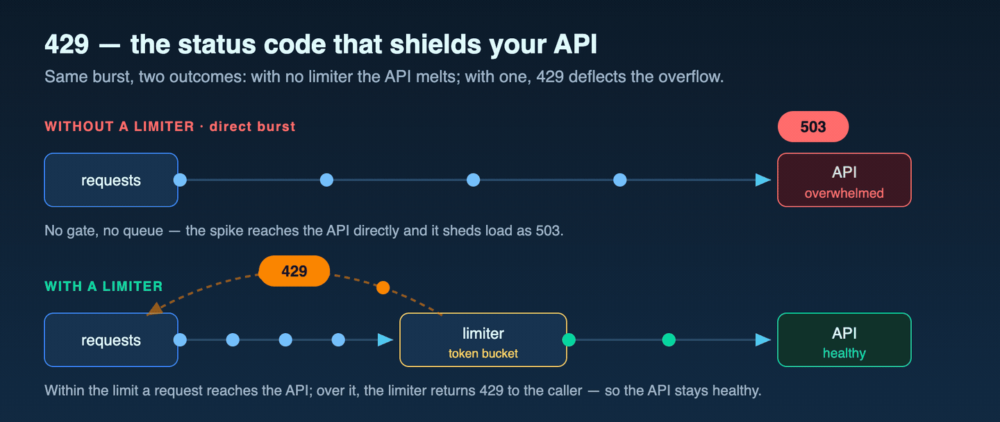
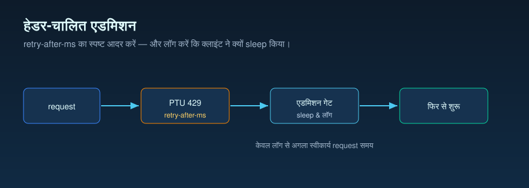

संचालन निबंध · PTU रिकवरी और 429 प्रबंधन
429 सिर्फ़ त्रुटि नहीं, रिकवरी का संकेत है
ट्रैफ़िक का एक बर्स्ट PTU क्षमता को 100% उपयोग तक पहुँचा देता है, और कॉल
429 लौटाने लगती हैं। ऐसे में आम तौर पर तीन रास्ते सूझते हैं: क्षमता खाली दिखने
तक स्वास्थ्य-जाँच चक्र चलाते रहो, बिना पक्की जानकारी के किसी निश्चित टाइमर पर
पुनः प्रयास करो, या सारा ट्रैफ़िक तुरंत किसी दूसरे लक्ष्य पर भेज दो। इन तीनों के पीछे
एक ही मान्यता है: दोबारा कोशिश कब सुरक्षित होगी, इसका अंदाज़ क्लाइंट को खुद लगाना
पड़ेगा। लेकिन ऐसा नहीं है। 429 जवाब यह बात पहले ही हेडर
retry-after-ms में बता देता है। इसलिए असली संचालन सवाल “कॉल विफल
हुई क्या?” नहीं, बल्कि “अगला फैसला किसके हाथ में है: प्रतीक्षा, पुनर्निर्देशन, या हार मानना?”
है।
retry-after-ms हेडर ही प्रवेश अनुबंध होता है। उसका
पालन करें, जिटर जोड़ें, और देखे गए लंबे टेल के लिए बजट रखें। यह एक-पृष्ठ सार
यही एक बात कहता है और साक्ष्य सीमा भी साफ़ करता है: हेडर Microsoft Learn
का अनुबंध है, जबकि उसके साथ दिखी छोटी माध्यिका और लंबे टेल वाला स्वरूप इस रिपॉज़िटरी के
स्रोत रन से लिया गया पहचान-रहित सार्वजनिक समेकित आँकड़ा है, जिसे सिर्फ़ वर्णनात्मक रूप
में दिखाया गया है।
429 रिकवरी एक-पृष्ठ सार SVG खोलें।

अंदाज़ लगाने के बजाय हेडर क्यों पढ़ें
इन तीनों शुरुआती प्रतिक्रियाओं के पीछे एक छिपी हुई मान्यता है: क्लाइंट यह जान
ही नहीं सकता कि क्षमता कब खाली होगी, इसलिए उसे या तो जाँच करना पड़ेगा, या किसी
निश्चित अंतराल पर प्रतीक्षा करना पड़ेगा, या फिर लक्ष्य छोड़ना पड़ेगा। इसे मान लेने से
पहले दो चीज़ें साथ रखनी चाहिए। पहली, Microsoft Learn क्या दस्तावेज़ित करता है: 100%
उपयोग पर सेवा तुरंत 429 लौटाती है और retry-after-ms जोड़ती
है। यानी सेवा खुद बताती है कि दोबारा कब कोशिश करनी है। दूसरी, इस रिपॉज़िटरी
के स्रोत रन में वास्तव में देखे गए retry-after-ms मानों का एक
पहचान-रहित सार्वजनिक समेकित आँकड़ा, जिसे वर्णनात्मक रूप में इसलिए शामिल किया गया है ताकि
दिख सके कि व्यवहार में ये सुझाई गई प्रतीक्षा-अवधियाँ कैसे दिखे। इन दोनों को साथ देखने पर “कब
दोबारा कोशिश करना सुरक्षित है?” यह सवाल क्लाइंट के अंदाज़े से निकलकर सेवा के
दिए हुए मान पर आ जाता है।
उस समेकित आँकड़े के स्वरूप पर ठहरकर देखना चाहिए। सुझाई गई प्रतीक्षा-अवधियाँ माध्यिका पर छोटी थीं (कुल p50 ≈ 43 ms), इसलिए स्वास्थ्य-जाँच चक्र या अंधा निश्चित-अंतराल
बैकऑफ़ आम तौर पर सेवा की असल मांग से कहीं ज़्यादा देर प्रतीक्षा कराते। लेकिन टेल
मामूली नहीं थी: प्रतीक्षाओं का एक छोटा हिस्सा 17,000 ms तक खिंचता था (कुल p99
≈ 16,921 ms)। यही छोटी माध्यिका और लंबे टेल वाला स्वरूप संचालन की दृष्टि से सबसे
अहम बात है। हेडर को निश्चित रीसेट घड़ी नहीं, प्रवेश-नियंत्रण संकेत की तरह
लेना चाहिए। तुरंत 429 मिलना और retry-after-ms अनुबंध, यह Microsoft
Learn दस्तावेज़ित करता है। किस बिंदु पर प्रतीक्षा बंद करके पुनर्निर्देशन करना चाहिए, इसे एक
विलंब-बजट ऊपरी सीमा से तय करना इस रिपॉज़िटरी का संचालनगत निष्कर्ष है। नीचे
दिया स्रोत चार्ट उसी वितरण को साफ़ दिखाता है।
सवाल
जब PTU क्षमता “अभी नहीं” कहे, तो क्लाइंट अगला कदम कैसे तय करे?
साक्ष्य
Microsoft Learn के आरक्षित थ्रूपुट और स्पिलओवर दस्तावेज़, साथ में इस रिपॉज़िटरी का PTU प्रवेश-नियंत्रक संचालनगत नोट।
फ़ैसला
पुनः प्रयास का स्वामी एक ही रखें। हेडर का पालन करें, जिटर जोड़ें, और पुनर्निर्देशन तभी करें जब विलंब नीति इसकी मांग करे।
आधिकारिक विनिर्देश · सेवा क्या कहती है
हेडर ही प्रवेश संकेत है
Microsoft Learn, PTU उच्च उपयोग के प्रबंधन को तुरंत 429 लौटाने वाले मार्ग के
रूप में बताता है, जिसके साथ retry-after-ms और
retry-after प्रतिक्रिया हेडर आते हैं। वही उत्पादन मार्गदर्शिका यह भी
समझाती है कि इस प्रतीक्षा को क्लाइंट-पक्ष पुनः प्रयास के लिए भी इस्तेमाल किया जा सकता है और
अनुरोध को किसी दूसरे सेवा लक्ष्य पर पुनर्निर्देशन करने के लिए भी।
क्या दस्तावेज़ीकृत है
retry-after-ms को सेवा द्वारा दिए गए प्रतीक्षा मान की तरह लें।
यह किसी अनुमानित निश्चित रीसेट अंतराल से ज़्यादा भरोसेमंद संकेत है।
क्या दस्तावेज़ीकृत नहीं है
इस प्रतीक्षा मान के पीछे का सटीक सूत्र सार्वजनिक नहीं है। क्लाइंट में कोई नियतात्मक रीसेट मॉडल स्थायी रूप से दर्ज न करें।
संचालनगत निष्कर्ष
अगर हेडर पहले ही बता रहा है कि दोबारा कब कोशिश करनी है, तो बार-बार की स्वास्थ्य-जाँच आम तौर पर उससे कमज़ोर संकेत देती है और अतिरिक्त ट्रैफ़िक के साथ अधिक शोरयुक्त टेलीमेट्री भी जोड़ती है।

सेवा व्यवहार · प्रतीक्षा स्थिर क्यों नहीं है
यह प्रतीक्षा प्रवेश नियंत्रण है, निश्चित शांत-अवधि नहीं
Microsoft Learn, PTU उपयोग को लीकी-बकेट एल्गोरिदम के एक रूपांतर की
तरह दस्तावेज़ित करता है। हर अनुरोध एक अनुमानित गणना लागत जोड़ता है: प्रॉम्प्ट
टोकन संख्या, जिसमें कैशित टोकन घटे होते हैं, और कॉल का
max_tokens जुड़ा होता है; जबकि डिप्लॉय की गई क्षमता PTU की संख्या के
अनुपात में लगातार घटती रहती है। अगर अनुरोध उस समय पहुँचे जब उपयोग
पहले से 100% हो, तो सेवा तुरंत HTTP 429 लौटाती है और
retry-after-ms व retry-after हेडर जोड़ती है, जो
बताते हैं कि अगला अनुरोध स्वीकार होने से पहले कितनी प्रतीक्षा करनी है।
क्योंकि यह प्रतीक्षा उस पल बकेट किस तरह खाली हो रही है, उसे दर्शाती है, इसलिए यह निश्चित शांत-अवधि नहीं है। यही दस्तावेज़ीकृत अनुबंध क्लाइंट को एक नहीं, दो रास्ते देता है: अगर प्रतीक्षा कॉलर के विलंब बजट में समाती है, तो हेडर का पालन करें; अगर प्रतीक्षा उस बजट से ऊपर जाती है, तो उसे पुनर्निर्देशन या विफलता की स्थिति मानें। एक ही बजट ऊपरी सीमा से इन दोनों रास्तों को अलग करना इस रिपॉज़िटरी का संचालनगत निष्कर्ष है; तुरंत 429 मिलना और हेडर अनुबंध, यही Microsoft Learn दस्तावेज़ित करता है।
retry-after-ms वितरण (वर्णनात्मक)।
क्षैतिज धुरी: प्रतिक्रिया हेडर द्वारा सुझाई गई प्रतीक्षा, मिलीसेकंड में।
ऊर्ध्वाधर धुरी: उस प्रतीक्षा से कम या बराबर 429 प्रतिक्रियाओं का अनुभवजन्य
संचयी हिस्सा।
रेखाएँ: हर स्रोत समूह के लिए एक वक्र, साथ में संयुक्त वक्र:
बर्स्ट-आकार स्रोत (n = 167), अनुसूचित-आकार स्रोत
(n = 26), और संयुक्त नमूना (n = 193); यह अनुभवजन्य
संचयी वितरण है, आवृत्ति हिस्टोग्राम नहीं।
इसे कैसे पढ़ें: हर वक्र शून्य के पास लगभग ऊपर तक पहुँच जाती है।
यानी इस नमूने में ज़्यादातर सुझाई गई प्रतीक्षा-अवधियाँ छोटी थीं (कुल p50
≈ 43 ms) — और फिर करीब 17,000 ms तक जाते लंबे टेल में
समतल हो जाती है, इसलिए प्रतीक्षाओं का एक छोटा हिस्सा बहुत लंबा था (कुल p99
≈ 16,921 ms)। यही छोटी माध्यिका और लंबे टेल वाला स्वरूप बताती है कि नीचे दिया
संचालन ढर्रा प्रतीक्षा को विलंब बजट ऊपरी सीमा तक सीमित रखता है और उसके बाद
पुनर्निर्देशन या विफल करता है। साक्ष्य सीमा: यह इस रिपॉज़िटरी के
स्रोत रन से ली गई 429 घटनाओं का एक पहचान-रहित सार्वजनिक समेकित आँकड़ा है, जिसे
वर्णनात्मक रूप में दिखाया गया है; यह सेवा-स्तरीय गारंटी, रीसेट मॉडल, या
किसी खास डिप्लॉयमेंट, क्षेत्र, या भविष्य के API संस्करण का मापन नहीं है।
स्रोत: प्रतिशतक मान इस रिपॉज़िटरी की
results/retry-after-characterization/retry_after_ms_percentiles.csv
से ली गई हैं (स्रोत CSV)।

| स्रोत समूह | 429 गणना | p50 | p90 | p99 | अधिकतम |
|---|---|---|---|---|---|
| कुल | 193 | 43 ms | 50.8 ms | 16,921.12 ms | 17,258 ms |
| बर्स्ट-आकार स्रोत | 167 | 43 ms | 49 ms | 16,983.26 ms | 17,258 ms |
| अनुसूचित-आकार स्रोत | 26 | 3 ms | 60 ms | 60 ms | 60 ms |
दस्तावेज़ीकृत (स्तर 1)
100% उपयोग पर सेवा तुरंत retry-after-ms और retry-after के साथ 429 लौटाती है; Learn इस 429 को सेवा त्रुटि नहीं, ट्रैफ़िक-प्रबंधन संकेत कहता है।
दस्तावेज़ीकृत (स्तर 1)
अनुमान में max_tokens शामिल होता है। इसे वास्तविक उत्पादन आकार के क़रीब रखने से समांतरता बढ़ती है। कैशित टोकन पूरी तरह छूट हो जाते हैं और उपयोग में नहीं जुड़ते।
अनुमानित (स्तर 2)
कॉलर एक ही विलंब-बजट ऊपरी सीमा तय करे और उसके ऊपर प्रतीक्षा से पुनर्निर्देशन पर बदले — यह इस रिपॉज़िटरी का व्यावहारिक नियम है, Learn विनिर्देश नहीं।
संचालन ढर्रा · पुनः प्रयास का स्वामी एक
पुनः-प्रयास चक्रों को एक के ऊपर एक न रखें
सुरक्षित ढर्रा जान-बूझकर सीधा है: 429 रिकवरी का स्वामी केवल एक घटक को बनाइए। अगर SDK पुनः प्रयास के लिए कॉन्फ़िगर है, तो प्रतीक्षा उसी को संभालने दें। अगर
अनुप्रयोग राउटर रिकवरी संभालता है, तो SDK स्वतः-पुनः प्रयास बंद करें और राउटर से
सीधे retry-after-ms पार्स कराएँ।
retry-after-ms पार्स
करता है, retry-after पर वैकल्पिक हेडर का उपयोग करता है, सुरक्षित थ्रॉटल घटनाएँ
उत्सर्जित करता है, और दोहरा-पुनः-प्रयास स्वामित्व को मना करता है।

प्रतीक्षा मार्ग
जब प्रति-कॉल विलंब से ज़्यादा थ्रूपुट मायने रखता हो, तब यह मार्ग लें। हेडर मान के साथ जिटर जोड़कर प्रतीक्षा करें, फिर दोबारा कोशिश करें।
पुनर्निर्देशन मार्ग
जब PTU पर बने रहने से ज़्यादा विलंब मायने रखता हो, तब यह मार्ग लें। 429 मिलते ही अनुरोध को मानक लक्ष्य पर रूट करें।
रोकने का मार्ग
जब प्रतीक्षा और पुनर्निर्देशन, दोनों नीति तोड़ते हों, तब यह मार्ग लें। पुनः प्रयास तूफ़ान छिपाने के बजाय नियंत्रित प्रतिक्रिया लौटाएँ।
वैकल्पिक मार्ग · मूल या कस्टम
पुनर्निर्देशन एक नीति चुनाव है, घबराहट बटन नहीं
Microsoft Learn की स्पिलओवर सुविधा, अतिरिक्त ट्रैफ़िक को मानक लक्ष्य पर पुनर्निर्देशन कर सकती है और ऐसे हेडर भी देती है जो स्पिलओवर व्यवहार पहचानने में मदद करते हैं। जब प्लेटफ़ॉर्म-समर्थित स्वरूप आपकी ज़रूरत से मेल खाता हो, तब यह कम संचालन वाला मार्ग है। कस्टम राउटर तब भी काम का रहता है जब अनुप्रयोग को PTU लक्ष्य से 429 लौटने से पहले फैसला करना हो, या जब रूटिंग नीति टेनेंट, क्षेत्र, विलंब बजट, या व्यावसायिक प्राथमिकता पर निर्भर करती हो।
मूल स्पिलओवर
जब सरल अतिप्रवाह मार्ग काफ़ी हो और अतिरिक्त रूटिंग तर्क, लाभ से ज़्यादा जोखिम जोड़ता हो, तब यह सबसे अच्छा विकल्प है।
कस्टम राउटर
जब उपयोगकर्ता विलंब खर्च होने से पहले अनुप्रयोग को नीति से तय करना हो कि प्रतीक्षा करना है, पुनर्निर्देशन करना है, या हार मानना है, तब यह बेहतर है।
अवांछित ढर्रा
SDK पुनः प्रयास + राउटर पुनः प्रयास + स्पिलओवर मिलकर प्रयास को कई गुना बढ़ा सकते हैं। सबसे पहले स्वामित्व को एकीकृत करें।
स्रोत और साक्ष्य सीमा
स्तर 1 — सेवा अनुबंध (Microsoft Learn)। 429 प्रवेश व्यवहार, दोनों पुनः प्रयास हेडर, लीकी-बकेट उपयोग मॉडल, और SDK की डिफ़ॉल्ट पुनः प्रयास यहीं दस्तावेज़ीकृत हैं।
- [1] उत्पादन में आरक्षित थ्रूपुट डिप्लॉयमेंट चलाना —
100% उपयोग पर तुरंत 429,
retry-after-msऔरretry-afterप्रतिक्रिया हेडर, लीकी-बकेट उपयोग मॉडल, और OpenAI SDK की डिफ़ॉल्ट 429 पुनः प्रयास (max_retries) को परिभाषित करता है। स्रोत: Microsoft Learn दस्तावेज़ (2026-06-04 को देखा गया) · अभिलेख। - [2] आरक्षित क्षमता के लिए स्पिलओवर से ट्रैफ़िक प्रबंधन करना —
गैर-200 अतिरिक्त भार (जिसमें
429भी शामिल है) कोspilloverDeploymentNameगुण और स्पिलओवर स्रोत बताने वाले x-ms प्रतिक्रिया हेडर की मदद से मानक लक्ष्य पर पुनर्निर्देशन करने वाली स्पिलओवर व्यवहार को परिभाषित करता है। स्रोत: Microsoft Learn दस्तावेज़ (2026-06-04 को देखा गया) · अभिलेख।
स्तर 2 — संचालनगत निष्कर्ष (यह रिपॉज़िटरी)। व्यावहारिक नियम — पुनः प्रयास का स्वामी एक रखें, हेडर का पालन करें, समूह को असमकालिक करने के लिए जिटर जोड़ें, और हेडर के अनुसार कई बार प्रतीक्षा करने के बाद भी बात साफ़ न हो तभी स्पिलओवर लक्ष्य पर पुनर्निर्देशन करें — संचालनगत हैं, Learn के विनिर्देश नहीं।
- [3] यह रिपॉज़िटरी,
docs/10-ptu-admission-controller.md— हेडर-आधारित प्रवेश नियंत्रक नोट: एकल पुनः प्रयास स्वामी,retry-after-msका पालन, डिफ़ॉल्ट जिटर, और प्रतीक्षा ऊपरी सीमा पार होने पर वैकल्पिक मार्ग। स्रोत। - [4] यह रिपॉज़िटरी,
batch_runner/ptu/admission_controller.py— वह संदर्भ कार्यान्वयन जोretry-after-msपार्स करती है,retry-afterपर वैकल्पिक मार्ग करती है, और दोहरा-पुनः-प्रयास स्वामित्व को मना करती है। स्रोत।
यह विषय क्या साबित करता है, और क्या नहीं। यह वही PTU प्रवेश
अनुबंध दर्ज करता है जिसे Microsoft Learn देखे जाने की तिथि पर बताता है — 100%
उपयोग पर तुरंत 429, retry-after-ms और
retry-after हेडर, और स्पिलओवर पुनर्निर्देशन मार्ग — और उसके साथ इस
रिपॉज़िटरी के कुछ संचालनगत व्यावहारिक नियम भी रखता है: हेडर का पालन करें,
समूह को असमकालिक करने के लिए जिटर जोड़ें, और हेडर के अनुसार कई बार प्रतीक्षा करने
के बाद भी बात साफ़ न हो तभी स्पिलओवर लक्ष्य पर पुनर्निर्देशन करें। यह यह साबित नहीं
करता कि यह अनुबंध हर क्षेत्र, मॉडल SKU, या भविष्य API संस्करण में बिल्कुल
एक-जैसा रहेगा, और न ही यह किसी खास डिप्लॉयमेंट को भार में मापता है।
व्यावहारिक नियम
व्यावहारिक नियम: जब PTU लक्ष्य 429 लौटाए, तो retry-after-ms
को प्रवेश अनुबंध मानें: उसका पालन करें, समूह को असमकालिक करने के लिए
जिटर जोड़ें, और हेडर के अनुसार कई बार प्रतीक्षा करने के बाद भी बात साफ़ न हो तभी स्पिलओवर
लक्ष्य पर पुनर्निर्देशन करें।
अगला लेख “कब पुनः प्रयास करें” से आगे बढ़कर यह पूछता है कि एक ही प्रॉम्प्ट बार-बार आने पर असल में फ़ैसला क्या होता है।
जब वही प्रॉम्प्ट दोहराया जाए, तो कैश कुंजी असल में क्या तय करती है